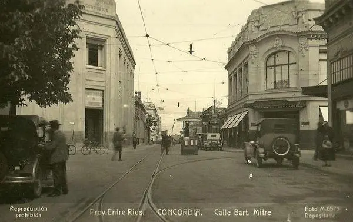

La palabra Concordia significa acuerdo, armonía, conformidad, unión de corazones (con cordis). Surgió como nombre de una población, corolario feliz de una larga etapa de desencuentros entre los entrerrianos sucedida entre 1825 y 1831 conocida como anarquía entrerriana.
Toda nuestra región, actuales Departamentos de Concordia, Federación, Federal y una parte de Feliciano, estaba comprendida en el Departamento Subalterno de Mandisoví. Como diputado fue elegido el Padre Mariano José del Castillo, párroco de Mandisoví, única población existente en el noreste entrerriano.La asamblea Extraordinaria se reunió en Paraná, llenó su cometido mediante una serie de medidas a fin de tranquilizar los espíritus y las armas de los grupos que se disputaban el poder por medio de luchas largas y estériles.
